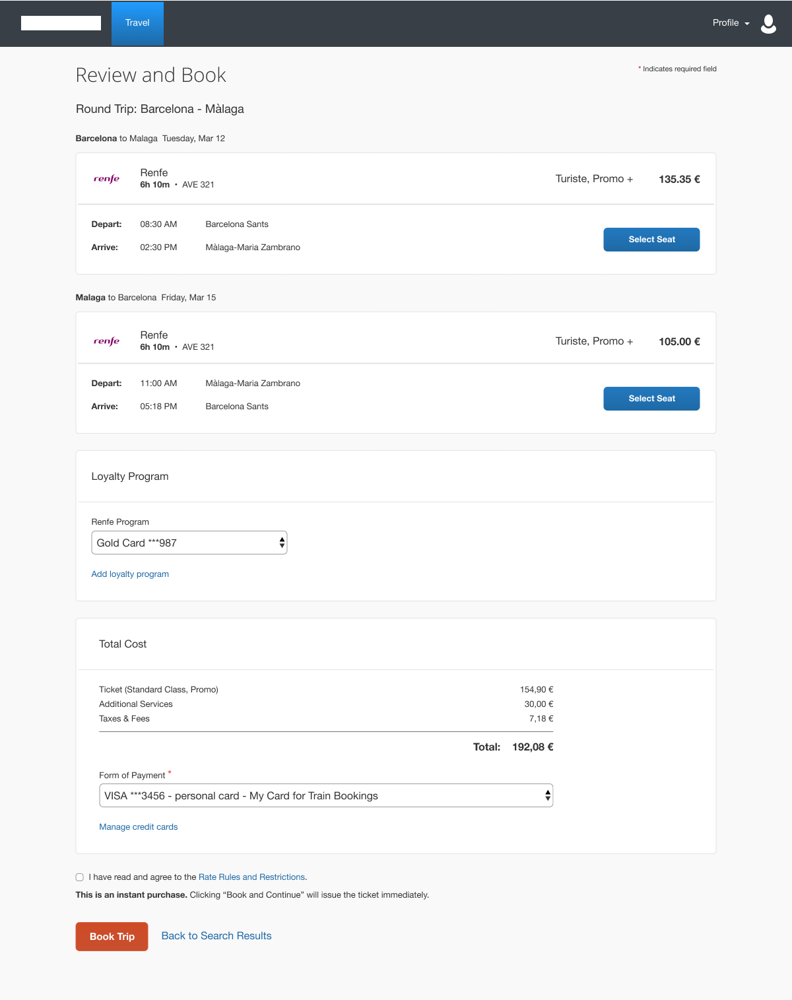
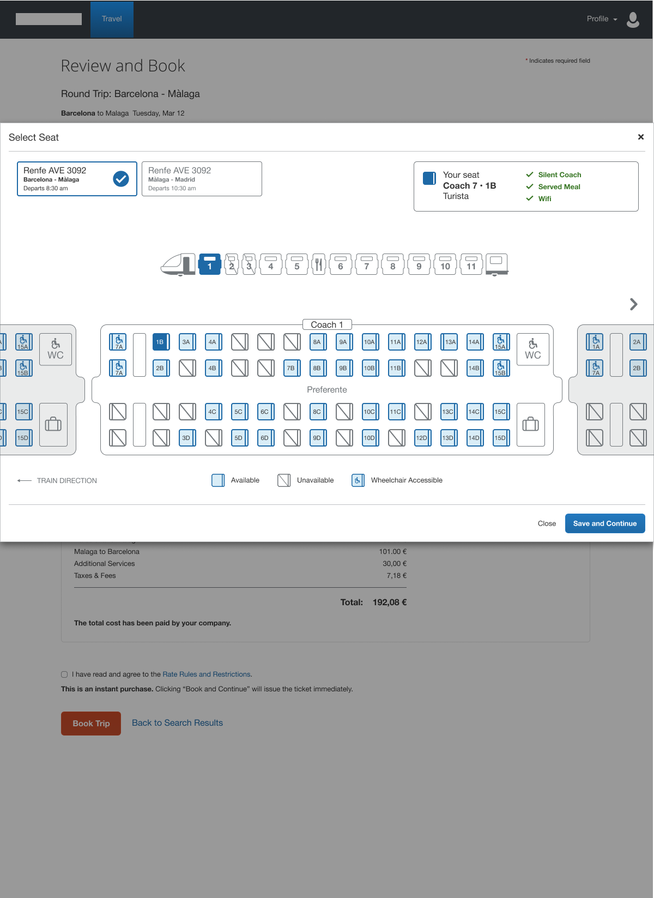
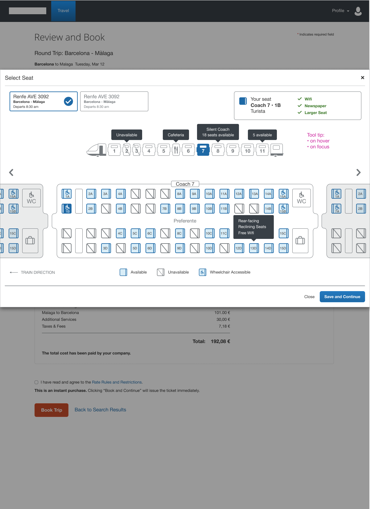
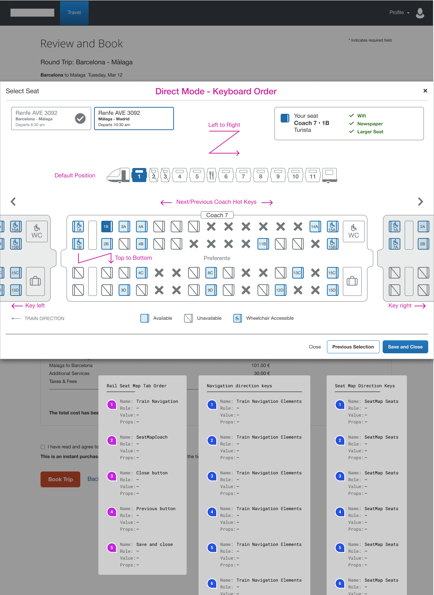
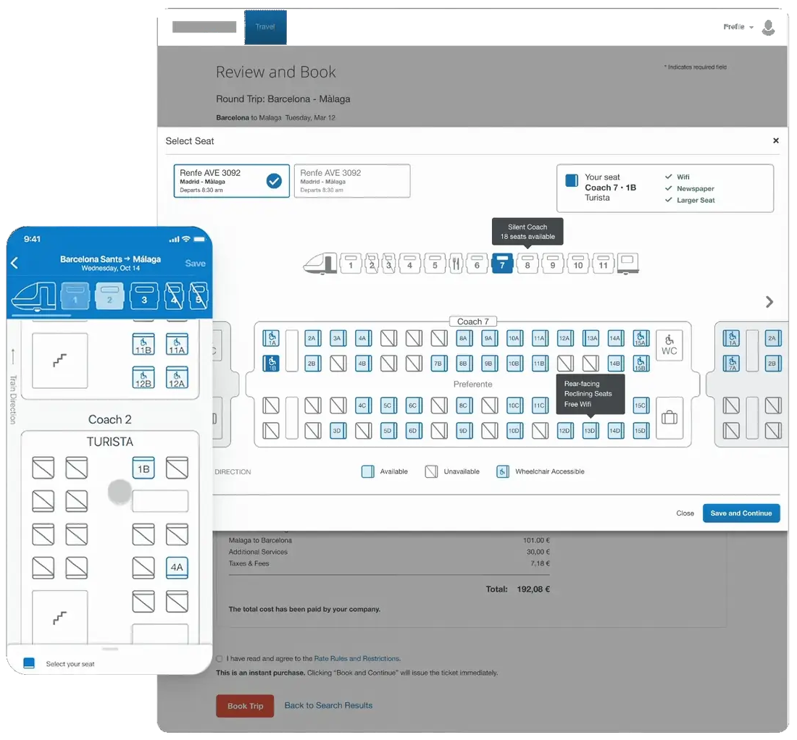

Designing an Accessible Rail Booking Experience
How do you simplify one of the most information-dense experiences in travel?
- 20% increase in completed bookings.
- 35% reduction in seat selection errors.
- Concur’s first interactive seat map; its patterns later shaped the Air team’s.
Why this project existed
SAP Concur’s rail booking experience handled complex routing, multi-leg journeys, and seat availability across dozens of rail operators, each with its own data formats, seating models, and booking rules.
The existing seat selection experience collapsed under that complexity. Business travelers, already navigating policy rules, approval workflows, and tight itineraries, hit an interface that required expertise they didn’t have to use.
No interactive seat map existed at Concur, rail or air. There was no pattern to inherit; this project had to establish one.

Three constraints that defined the design
Rail is the most information-dense booking surface in travel. Every design decision had to hold up under the data load.
Making seat data scannable, not just displayable
Seat selection data — car type, seat class, accessibility needs, and more — varies by operator. Displaying it all created cognitive overload; hiding it caused misbookings.
Decision · A spatial seat map with progressive detail: the map shows position, selection reveals the relevant attributes for that seat.


Designing for accessibility without removing capability
A visual seat map is inaccessible to screen reader users by default. But replacing it with a list loses the spatial understanding that helps travelers choose confidently.
Decision · A dual-mode design: a visual map with full ARIA semantics, plus a structured list mode that keyboard and screen reader users can switch to (same data, appropriate for each mode).

Handling policy constraints without punishing the traveler
Corporate travel policies restricted certain seat classes, fare types, and booking windows. The existing flow surfaced policy violations only after selection, which was the primary source of rebooking.
Decision · Pre-filter to compliant options by default, with a clear path to view all seats for travelers with a legitimate reason to override: policy-forward without policy-punishing.

Mapping seat complexity
The seat data model varied significantly across rail operators. I mapped the full matrix of variables (car type, class, direction, reservation status, accessibility attributes) to find the minimum viable representation that worked across all operators without requiring operator-specific design.
Rapid prototyping of the spatial layout let me test legibility at different data densities before committing to the ARIA implementation, a significant engineering investment that needed to be right before build began.
As production ramped up, I delegated defined pieces of the work to a junior designer, directing the effort and giving feedback so we could move faster without losing consistency.

Testing with business travelers
I wrote the brief, built the prototype, and moderated sessions with frequent business travelers booking multi-leg journeys under policy constraints, then partnered with the UX research team to synthesize what we heard. The dual-mode accessibility approach held up immediately — screen reader participants navigated the structured list without needing the map — and the sessions surfaced one gap we closed before launch: travelers wanted to see their previously selected seats when returning from a policy override.
Stakeholders had pushed back on the accessibility investment early — "Does everything need to be tabbed? Can we skip some items?" Interviewing visually impaired travelers directly settled it: guide dog owners consistently preferred table seats for the extra space on long journeys, a finding that reset our screen-reader priority order and told us exactly which components were safe to skip. My documentation of that work became the reference engineering built the implementation from.
It was a bit hard to tell what each seat offers. I want to see options like power outlets or extra space right away, not guess.

Clarity inside complexity
The seat selection experience shipped across responsive breakpoints. Accessibility compliance was validated against WCAG 2.1 AA: 4.5:1 contrast, a documented tab order, semantic heading structure, and ARIA labelling throughout, tested up to 200% zoom. The data model held across all rail operators in the initial launch set.
20% increase in completed bookings
Simplifying the most information-dense step in the flow reduced abandonment at seat selection.
35% reduction in seat selection errors
Pre-filtering to policy-compliant options and clarifying seat attributes reduced mis-selections and the rebooking they caused.
Set the pattern for seat selection at Concur
No interactive seat map existed before this, rail or air. The spatial map and dual-mode accessibility pattern became the reference the Air team designed against.
What this project taught me
Four stakeholders pulled this design in four directions (traveler, admin, policy team, rail operator), and each had a legitimate case. The work was finding the arrangement that honored all of them without asking anyone to compromise more than they had to.
The guide dog finding is the one I still think about. I would have designed a defensible screen-reader priority order without ever talking to a visually impaired traveler, and gotten it wrong in a way no amount of internal debate would have caught. Now I treat "we’ve reasoned our way to the right order" as a hypothesis to test, not a decision to ship, especially in accessibility work where the wrong assumption is invisible until a real user hits it.